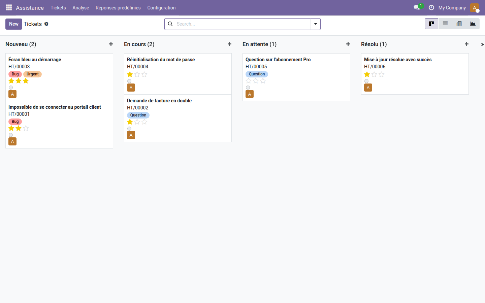
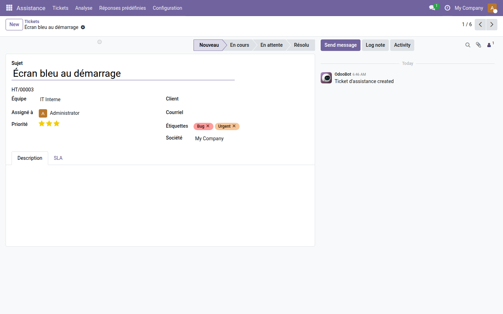
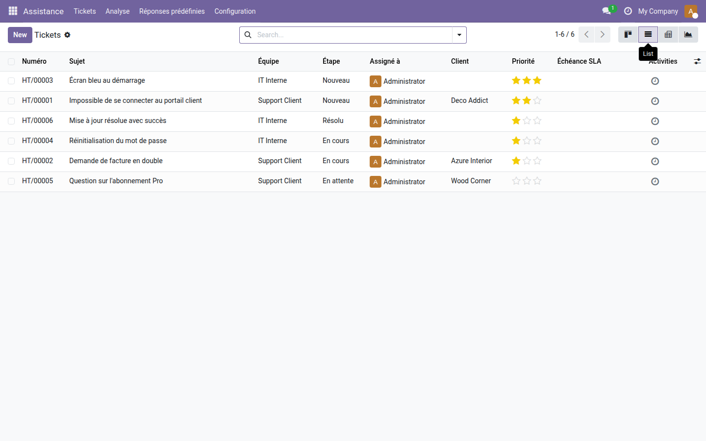

Assistance (Helpdesk) — Oski
Centralisez toutes les demandes client en tickets structurés : plus rien ne tombe à l'eau, chaque problème a un responsable et une date de résolution.
Sans outil dédié, les demandes d'assistance s'éparpillent entre emails, appels et notes manuscrites. Certaines restent sans réponse pendant des jours, d'autres sont traitées deux fois par deux agents différents — et personne ne sait vraiment ce qui est ouvert, bloqué ou résolu. Résultat : des clients frustrés et une équipe support qui navigue à vue.
Ce que ça apporte
- ✅ Tickets numérotés automatiquement — sujet, priorité (basse à urgente), client, équipe, description HTML. Chaque ticket a un numéro de référence dès la création.
- 📧 Création par email — configurez un alias par équipe (ex. support@votreentreprise.com) : chaque email entrant devient un ticket sans aucune action manuelle.
- ⚖️ Assignation équilibrée par charge — en mode automatique, le nouveau ticket est attribué à l'agent qui en a le moins en cours parmi les membres de l'équipe.
- 📊 Vue Kanban par étape — visualisez en un coup d'œil tous les tickets par état (Nouveau / En cours / Résolu…), avec indicateur de blocage coloré et avatar de l'agent assigné.
- 🔍 Filtres et regroupements avancés — retrouvez instantanément "mes tickets", les non assignés, les ouverts ; regroupez par équipe, étape, agent ou priorité.
- 💬 Chatter et activités intégrés — échanges internes, historique complet des modifications et activités de suivi (appel, email, rendez-vous) directement sur chaque ticket.
- 📈 Pivot et graphiques — analysez la répartition des tickets par équipe, étape et priorité sans quitter l'interface.
En images
Pipeline Kanban — tous les tickets regroupés par étape, avec tags colorés et étoiles de priorité.

Fiche ticket — numéro de référence, équipe, priorité, étiquettes et chatter de traçabilité.

Vue liste — tableau récapitulatif avec numéro, sujet, équipe, étape, assigné, client, priorité et SLA.

Pourquoi l'adopter
- 100 % gratuit, aucune dépendance externe — s'installe sur n'importe quelle instance Odoo 19 Community ou Enterprise (requiert uniquement les modules base et mail).
- Opérationnel en quelques minutes — les étapes (Nouveau, En cours, Résolu) et la séquence de numérotation sont préconfigurées à l'installation.
- Architecture extensible — ce module est le cœur de la suite Helpdesk Oski. Ajoutez des add-ons Pro au fur et à mesure de vos besoins : SLA, portail client, réponses prédéfinies, évaluation de satisfaction, rapports avancés.
- Traçabilité complète — chaque modification de priorité, d'étape ou d'assignation est enregistrée dans le chatter ; idéal pour les audits internes et le suivi qualité.
Fait partie de la suite Helpdesk Oski
Ce module free est la fondation. Complétez avec les add-ons Pro pour transformer votre support en centre d'assistance professionnel :
- oski_helpdesk_sla — Politiques SLA : délais cibles, alertes et escalades automatiques (39 €).
- oski_helpdesk_website — Portail client : vos clients créent et suivent leurs tickets depuis votre site (39 €).
- oski_helpdesk_canned — Réponses prédéfinies : gagnez du temps avec des modèles de réponses réutilisables (29 €).
- oski_helpdesk_rating — Évaluation satisfaction : recueillez un avis client à la clôture de chaque ticket (29 €).
Disponible en bundle Helpdesk Pro à 119 € (6 add-ons, -39 %). Voir la suite complète sur apps.odooskills.com.
Licence LGPL-3 — gratuit, code source ouvert. Compatible Odoo 19.0. Support : support@odooskills.com.